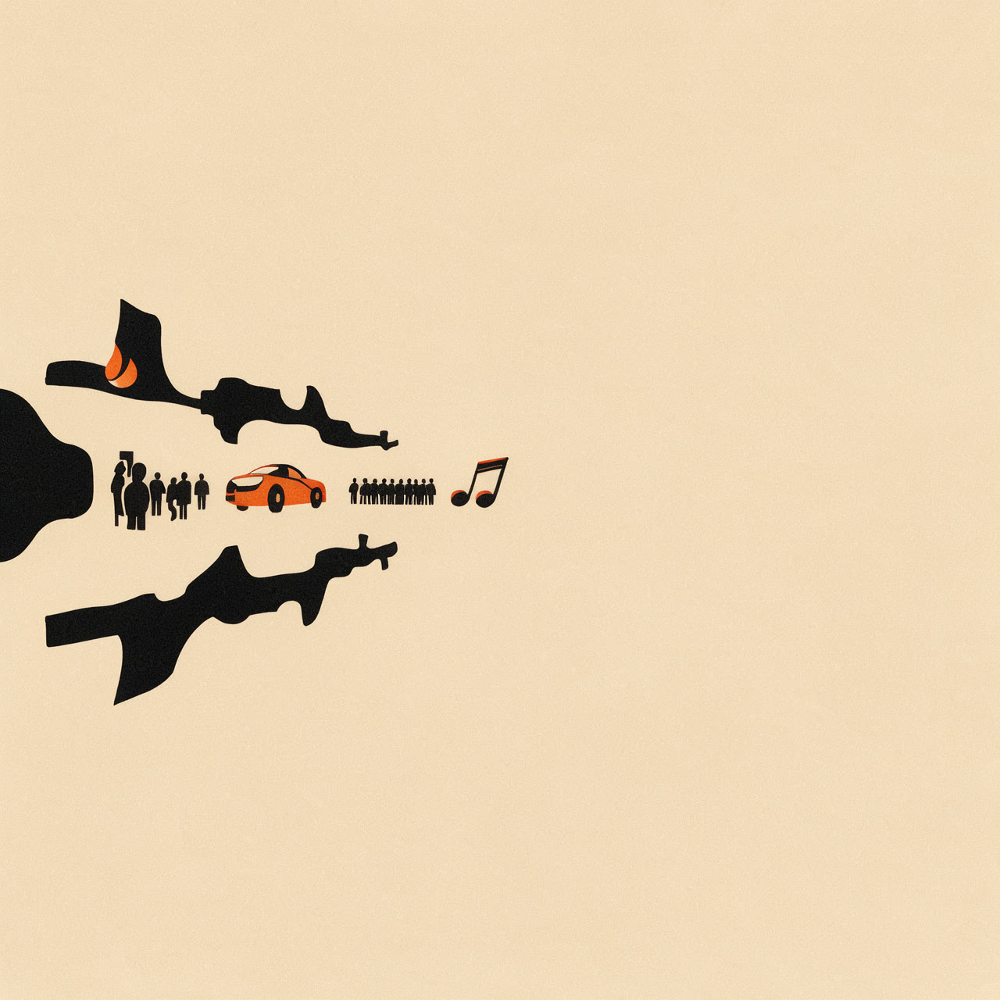
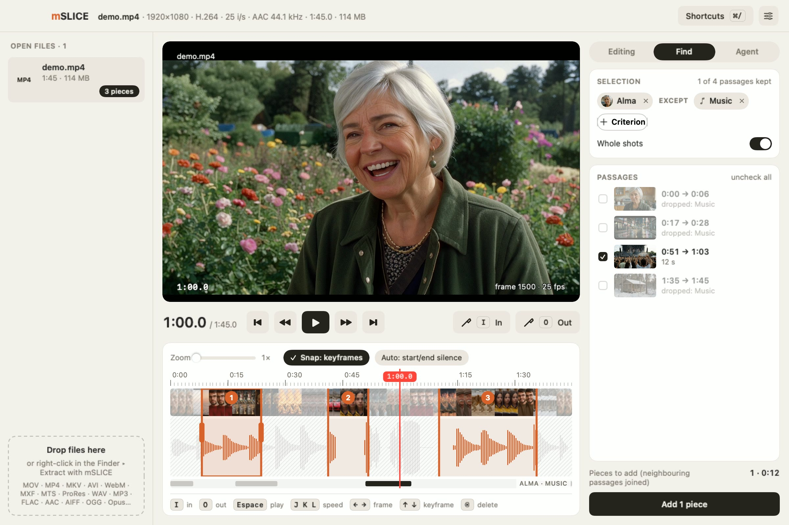

mSLICE n'a besoin d'aucun compte ni d'aucune connexion : aucun accès réseau, sauf la recherche de mise à jour et, si vous l'acceptez, le téléchargement du modèle des personnages.
mSLICE needs no account and no connection: no network access, except the update check and, if you agree, the download of the characters model.
Une timeline : règle avec images clés, vignettes, forme d'onde, morceaux en orange.
A timeline: ruler with keyframes, thumbnails, waveform, orange pieces.
Français
Bistouri : placez la tête de lecture, I pour l'entrée, O pour la sortie, et le morceau existe. Faites-en autant que vous voulez dans le même fichier ; glissez les poignées pour ajuster. [ et ] passent au morceau précédent ou suivant, ⌫ supprime le morceau, ⌘Z annule.
Se déplacer : la tête de lecture suit la souris image par image ; ←→ avancent d'une image, ⇧←⇧→ d'une seconde, ↑↓ d'une image clé ; JKL pilotent la lecture. Le zoom se règle au curseur, à ⌘ + molette ou au pincement.
English
Scalpel: place the playhead, I for the in point, O for the out point, and the piece exists. Make as many as you like in the same file; drag the handles to adjust. [ and ] jump to the previous or next piece, ⌫ deletes the piece, ⌘Z undoes.
Moving around: the playhead follows the mouse frame by frame; ←→ step one frame, ⇧←⇧→ one second, ↑↓ one keyframe; JKL drive playback. Zoom with the slider, ⌘ + wheel or pinch.
Aimant : images clés cale les coupures sur les images clés. Auto : silences début / fin pose d'un clic un morceau qui retire le silence d'ouverture et de fin.
Snap: keyframes snaps cuts to keyframes. Auto: start/end silence places, in one click, a piece that removes the opening and closing silence.
Un par morceau crée nom_01, nom_02… ; la numérotation continue d'un export à l'autre et rien n'est jamais écrasé. Fusionner assemble les morceaux bout à bout dans un seul fichier. Le dossier de sortie est, par défaut, celui de l'original.
Sans recompression (copie directe des flux) : instantané, aucune perte. Une vidéo ne peut alors démarrer que sur une image clé : l'entrée se cale sur l'image clé précédente et l'interface vous le dit. Recompresser coupe à l'image près : H.264, H.265 ou ProRes en matériel (VideoToolbox), VP9 pour le WebM.
English
One per piece creates name_01, name_02… ; numbering continues from one export to the next and nothing is ever overwritten. Merge joins the pieces end to end into a single file. The output folder is, by default, the original's.
Direct copy (streams copied as they are): instant, lossless. A video can then only start on a keyframe: the in point snaps to the previous keyframe and the interface tells you. Re-encode cuts frame-exact: hardware H.264, H.265 or ProRes (VideoToolbox), VP9 for WebM.
Sortie
Formats
Conteneurs
Identique à l'original, MP4, MOV, MKV, WebM
Audio seul
MP3 (LAME), M4A, WAV, FLAC, AIFF, Opus
Réglages
Chiffres de la numérotation, nom du fichier fusionné, révéler dans le Finder, mettre l'original à la corbeille (jamais par défaut)
Output
Formats
Containers
Same as source, MP4, MOV, MKV, WebM
Audio only
MP3 (LAME), M4A, WAV, FLAC, AIFF, Opus
Settings
Numbering digits, merged file name, reveal in Finder, move the original to the Trash (never by default)
Par lot, depuis le Finder
In batch, from the Finder
Un clic droit sur plusieurs fichiers propose « Élaguer début et fin avec mSLICE… » : retirez X secondes au début et Y à la fin de chacun, ou laissez mSLICE détecter les silences d'ouverture et de fin. Les résultats sont écrits dans le même dossier, les originaux ne sont jamais modifiés, et un fichier trop court est signalé au lieu d'être traité.
A right-click on several files offers “Trim start and end with mSLICE…”: remove X seconds at the start and Y at the end of each, or let mSLICE detect the opening and closing silence. Results are written in the same folder, originals are never modified, and a file that is too short is reported instead of processed.
DESKTOP MAC TOOLKIT · v1.36

2
Trouver · Find
Trouver
Find
Repérer, avec les modèles intégrés à macOS, les plans, les scènes et les sons d'un fichier, puis transformer leurs passages en morceaux.
Spot, with the models built into macOS, a file's shots, scenes and sounds, then turn their passages into pieces.
Ouvrez l'onglet Trouver et cliquez sur Analyser. Environ une seconde par minute de vidéo ; vous pouvez continuer à travailler, et l'analyse se met en pause pendant la lecture et l'export. Le résultat est gardé : pas besoin de recommencer à la prochaine ouverture du fichier.
mSLICE y repère les plans (coupures du montage), une quarantaine de familles de scènes et de familles de sons. Tout se passe sur votre Mac avec Vision et SoundAnalysis ; rien n'est envoyé.
English
Open the Find tab and click Analyze. About one second per minute of video; you can keep working, and the analysis pauses during playback and export. The result is kept: no need to redo it next time you open the file.
mSLICE spots the shots (editing cuts), about forty scene families and sound families. Everything happens on your Mac with Vision and SoundAnalysis; nothing is sent.
Ce que l'on trouve
Exemples
Scènes (45 familles)
feu et flammes, feux d'artifice, foule, nuit, ville, véhicules et routes, animaux, nourriture, sport, mer, forêt, neige, intérieur, documents, vêtements et costumes, art…
fire and flames, fireworks, crowd, night, city, vehicles and roads, animals, food, sport, sea, forest, snow, indoors, documents, clothing and costumes, art…
« Explosion » n'existe pas comme étiquette d'image : le son « Explosions » et la scène « Feu et flammes » s'en approchent. Pour les passages entre deux plans en fondu, seule une coupure franche est détectée.
“Explosion” does not exist as a picture label: the “Explosions” sound and the “Fire and flames” scene come close. Only hard cuts are detected, not dissolves.
« Alma SAUF musique, en plans entiers » : 1 passage retenu sur 4, trois écartés pour la musique.

“Alma EXCEPT music, whole shots”: 1 of 4 passages kept, three dropped for music.
Tous les rires
Cliquez sur « Rires » dans la liste des sons, gardez « Plans entiers » éteint (marge de 0,3 s), « Ajouter ».
Les plans de nuit, sans musique
Cliquez sur « Nuit », puis « + Critère » ▸ « Sauf quand… » ▸ Sons ▸ Musique. « Plans entiers » allumé.
Le feu ET la foule
Cliquez sur « Feu et flammes », puis « + Critère » ▸ « Et aussi… » ▸ Scènes ▸ Foule : seuls les passages où les deux sont vrais restent.
Une étiquette précise
Les agents peuvent aussi viser une étiquette brute de macOS (label:fireworks, sound_label:gunshot_gunfire) pour aller plus fin que les familles.
Every laugh
Click “Laughter” in the sounds list, keep “Whole shots” off (0.3 s margin), “Add”.
Night shots, no music
Click “Night”, then “+ Criterion” ▸ “Except when…” ▸ Sounds ▸ Music. “Whole shots” on.
Fire AND crowd
Click “Fire and flames”, then “+ Criterion” ▸ “And also…” ▸ Scenes ▸ Crowd: only passages where both hold remain.
A precise label
Agents can also target a raw macOS label (label:fireworks, sound_label:gunshot_gunfire) to go finer than families.
Les passages écartés par un SAUF restent dans la liste, grisés, avec la raison écrite ; vous pouvez les cocher pour les garder malgré tout. « Ajouter N morceaux » est annulable d'un seul ⌘Z.
Passages dropped by an EXCEPT stay in the list, greyed, with the reason written; you can tick them to keep them anyway. “Add N pieces” undoes with a single ⌘Z.
Carte « Personnages » ▸ « Télécharger » (≈ 60 Mo). Facultatif, jamais embarqué : il n'est téléchargé que si vous le demandez, vérifié par son empreinte SHA-256, et supprimable à tout moment.
2 · Reconnaître
« Reconnaître les personnages » : environ une seconde par minute de vidéo, sur votre Mac. Le résultat est gardé avec le fichier.
3 · Utiliser
Un clic sur une vignette ajoute le personnage à la sélection, comme une scène : « ce personnage SAUF musique », en plans entiers.
4 · Corriger
Clic droit : Renommer (le nom suit le personnage partout, y compris pour l'agent), Réunir avec… deux vignettes de la même personne, Séparer en deux un groupe qui mélange deux personnes, Ce n'est pas un personnage pour écarter une affiche ou un reflet.
1 · Download the model
“Characters” card ▸ “Download” (≈ 60 MB). Optional, never bundled: it is only downloaded when you ask, verified by its SHA-256 hash, and removable at any time.
2 · Recognise
“Recognise the characters”: about one second per minute of video, on your Mac. The result is kept with the file.
3 · Use
A click on a thumbnail adds the character to the selection, like a scene: “this character EXCEPT music”, whole shots.
4 · Fix
Right-click: Rename (the name follows the character everywhere, including for the agent), Join with… two thumbnails of the same person, Split in two a group that mixes two people, Not a character to drop a poster or a reflection.
Limites : visages seulement (ni créatures ni costumes) ; les visages de profil, petits ou flous peuvent être mal regroupés : c'est pour cela que réunir et séparer existent. Deux visages d'une même image ne sont jamais réunis dans le même personnage.
Limits: faces only (no creatures or costumes); profile, small or blurry faces may be grouped wrongly: that is why join and split exist. Two faces from the same frame are never put in the same character.
L'agent est désactivé par défaut. Pour l'activer : Réglages ▸ Agent ▸ « Autoriser un agent à piloter mSLICE ». Il vaut pour le panneau de discussion et pour le serveur MCP. L'agent crée de nouveaux fichiers ; il ne peut ni supprimer, ni écraser, ni mettre à la corbeille, et n'écrit que dans le dossier du fichier source (ou celui que vous avez choisi pour l'export).
Panneau de discussion (onglet Agent) : Claude Code (détecté automatiquement, utilise votre abonnement sans clé API), API Anthropic ou tout serveur compatible OpenAI (Ollama, LM Studio…). Les clés sont conservées dans le Trousseau, jamais en clair ; « Tester la connexion » vérifie le réglage.
English
The agent is off by default. To turn it on: Settings ▸ Agent ▸ “Allow an agent to drive mSLICE”. It applies to the chat panel and to the MCP server. The agent creates new files; it can neither delete, overwrite nor trash anything, and only writes in the source file's folder (or the export folder you chose).
Chat panel (Agent tab): Claude Code (detected automatically, uses your subscription without an API key), Anthropic API or any OpenAI-compatible server (Ollama, LM Studio…). Keys are kept in the Keychain, never in clear; “Test the connection” checks the setup.
Raccorder un autre agent (MCP)
Connect another agent (MCP)
Réglages ▸ Agent ▸ « Raccorder d'autres agents (MCP) » : trois boutons copient la configuration. mslice-mcp est livré dans l'appli et fonctionne fenêtre ouverte ou non.
claude mcp add --scope user mslice -- "/Applications/mSLICE.app/Contents/MacOS/mslice-mcp"
Settings ▸ Agent ▸ “Connect other agents (MCP)”: three buttons copy the configuration. mslice-mcp ships inside the app and works with the window open or not.
claude mcp add --scope user mslice -- "/Applications/mSLICE.app/Contents/MacOS/mslice-mcp"
État de l'appli, fichiers ouverts, morceaux, valeurs d'export
probe_media
Durée, flux, codec, images clés (option)
find_silences
Intervalles de silence et plages sonores
get_frame
Image PNG à un instant donné
analyze_media
Plans, familles de scènes et de sons ; characters=true reconnaît aussi les personnages (modèle installé par l'utilisateur)
find_scenes
Passages selon include / exclude : scene:, sound:, label:, sound_label:, person: ; apply = none / add / set
list_subjects · name_subject
Liste les personnages reconnus ; leur donne un nom
get_segments · set_segments
Lit ou remplace les morceaux (durées en secondes ou m:ss.d)
add_segment · remove_segment · clear_segments
Ajoute, retire, vide les morceaux
trim_edges · trim_silences · split_on_silence
Élague début et fin, retire les silences d'ouverture et de fin, découpe aux silences
preview_export · export · batch_trim
Simule puis exporte (copie directe ou recompression), élague plusieurs fichiers
open_in_app · seek
Ouvre un fichier dans l'appli, place la tête de lecture
Tool
Role
get_state
App state, open files, pieces, export defaults
probe_media
Duration, streams, codec, keyframes (optional)
find_silences
Silent intervals and sounding ranges
get_frame
PNG picture at a given time
analyze_media
Shots, scene and sound families; characters=true also recognises characters (model installed by the user)
find_scenes
Passages by include / exclude: scene:, sound:, label:, sound_label:, person:; apply = none / add / set
list_subjects · name_subject
Lists recognised characters; names them
get_segments · set_segments
Reads or replaces the pieces (times in seconds or m:ss.d)
add_segment · remove_segment · clear_segments
Adds, removes, clears pieces
trim_edges · trim_silences · split_on_silence
Trims start and end, removes opening and closing silence, splits at silences
preview_export · export · batch_trim
Dry-runs then exports (direct copy or re-encode), trims several files
open_in_app · seek
Opens a file in the app, moves the playhead
Exemple : « garde toutes les apparitions d'Alma, sauf quand il y a de la musique, et fusionne » → find_scenes (include ["person:Alma"], exclude ["sound:music"], apply "set") → preview_export → export (fusionné).
Example: “keep every appearance of Alma, except when there is music, and merge” → find_scenes (include ["person:Alma"], exclude ["sound:music"], apply "set") → preview_export → export (merged).
En copie directe, une vidéo ne démarre que sur une image clé : l'entrée se cale sur l'image clé précédente (l'avertissement orange le dit). Choisissez « Recompresser » pour couper à l'image près.
« L'analyse a échoué ».
macOS n'a pas pu lire les images ou le son. Réessayez, ou essayez un autre fichier ; les formats que macOS ne lit pas passent par une copie de lecture temporaire.
Le feu, la foule ou le feu d'artifice n'apparaissent pas.
La carte Scènes dit lesquelles n'ont pas été repérées dans ce fichier. Les familles sont larges (« Personnes » couvre presque tout un dialogue) : combinez-les avec ET.
Deux personnes sont réunies en un seul personnage.
Clic droit sur la vignette ▸ « Séparer en deux ». À l'inverse, « Réunir avec… » regroupe deux vignettes de la même personne.
La reconnaissance échoue.
Le modèle est introuvable ou altéré : supprimez-le depuis la carte Personnages, puis téléchargez-le de nouveau.
Le clic droit du Finder n'apparaît pas.
Réglages Système ▸ Extensions ▸ Finder, cochez mSLICE ; l'état figure dans les réglages de l'appli.
Un agent n'arrive pas à piloter mSLICE.
Vérifiez Réglages ▸ Agent ▸ « Autoriser un agent » et ouvrez le journal pour lire le refus.
Question
Answer
My piece starts before my in point.
With direct copy a video can only start on a keyframe: the in point snaps to the previous keyframe (the orange warning says so). Choose “Re-encode” to cut frame-exact.
“The analysis failed”.
macOS could not read the pictures or the sound. Try again, or try another file; formats macOS cannot read go through a temporary playback copy.
Fire, crowd or fireworks do not show up.
The Scenes card says which ones were not spotted in this file. Families are broad (“People” covers almost a whole dialogue): combine them with AND.
Two people are merged into one character.
Right-click the thumbnail ▸ “Split in two”. Conversely, “Join with…” merges two thumbnails of the same person.
Recognition fails.
The model is missing or damaged: remove it from the Characters card, then download it again.
The Finder right-click does not appear.
System Settings ▸ Extensions ▸ Finder, tick mSLICE; the status is in the app's settings.
An agent cannot drive mSLICE.
Check Settings ▸ Agent ▸ “Allow an agent” and open the log to read the refusal.
mSLICE est publié sous licence MIT et fait partie du DESKTOP MAC TOOLKIT (Starbudweiser & Claude Code, Anthropic). Le code est sur github.com/starbudweiser/mSLICE.
L'appli embarque FFmpeg (LGPL 2.1, compilé sans GPL), LAME, mpg123, Opus et libvpx. Le modèle optionnel des personnages est AuraFace de fal.ai (Apache 2.0), converti en Core ML ; sa licence et sa notice de modification sont gardées à côté du modèle installé. Le détail est dans THIRD_PARTY_LICENSES.md.
English
mSLICE is published under the MIT licence and is part of the DESKTOP MAC TOOLKIT (Starbudweiser & Claude Code, Anthropic). The code is at github.com/starbudweiser/mSLICE.
The app bundles FFmpeg (LGPL 2.1, built without GPL), LAME, mpg123, Opus and libvpx. The optional characters model is fal.ai's AuraFace (Apache 2.0), converted to Core ML; its licence and modification notice are kept next to the installed model. Details are in THIRD_PARTY_LICENSES.md.
♥ Soutenir le projet : facultatif, discret, aucune fonction bloquée. Le lien est en bas de la fenêtre « À propos » et dans le fichier README ; github.com/sponsors/starbudweiser.
♥ Support the project: optional, discreet, no feature locked. The link is at the bottom of the “About” window and in the README; github.com/sponsors/starbudweiser.